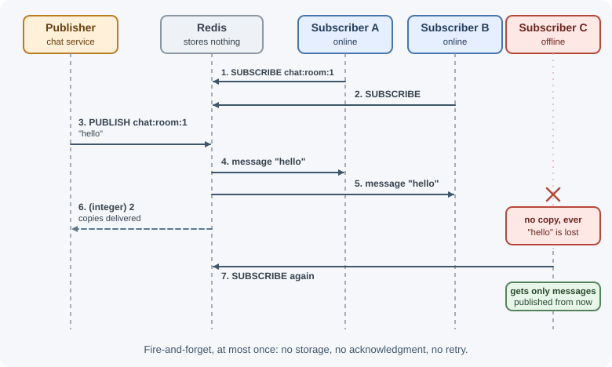
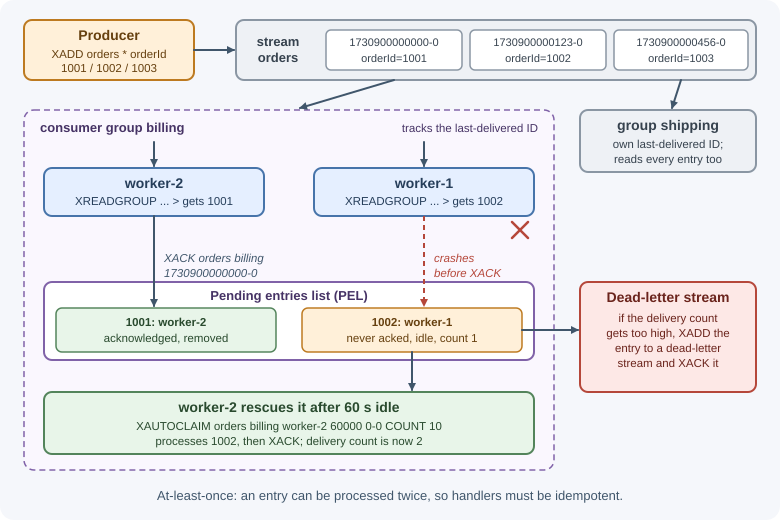

Pub/Sub and Streams¶
Redis offers two ways to move messages between parts of a system. Pub/Sub broadcasts a message instantly to whoever is listening and then forgets it. Streams append messages to a stored log that consumers read at their own pace, with acknowledgments and recovery. This lesson explains both, compares them, and shows when a dedicated broker such as Kafka or RabbitMQ is the better choice.
Why it matters¶
Backends constantly need to tell other processes that something happened: a chat message arrived, an order was placed, a cache entry is stale. Picking the wrong mechanism causes subtle bugs. Pub/Sub silently drops messages when a subscriber is offline, so it is wrong for "every order must be billed". Streams keep messages, but only within available memory. Knowing the delivery guarantees of each lets you choose deliberately; the general theory is in messaging fundamentals and delivery guarantees.
Real-world usage¶
- Mastodon backs its streaming API with Redis: its streaming servers receive updates through Redis Pub/Sub (they export a metric counting messages received from Redis pubsub) and stream them to connected clients (Mastodon: Scaling up your server).
- GitLab uses Redis as the Pub/Sub backend for ActionCable, the Rails WebSocket framework behind its real-time features (GitLab: Redis guidelines).
- Discourse's
message_buslibrary, which pushes updates to Ruby processes and browsers, can use Redis as its storage backend (discourse/message_bus). - Slack ran its job queue on Redis, and after an outage caused by Redis running out of memory it put Kafka in front of Redis as a durable buffer "against memory exhaustion and job loss", keeping Redis for scheduling and execution (Slack engineering).
How it works¶
Pub/Sub¶
Publishers send messages to a channel; every client currently subscribed to that channel receives a copy.

| Command | Purpose |
|---|---|
PUBLISH channel message |
Send a message; returns how many clients it was sent to (in Redis Cluster, only clients on the same node are counted) |
SUBSCRIBE channel... |
Listen on exact channel names |
PSUBSCRIBE pattern... |
Listen on glob patterns, such as chat:room:* |
UNSUBSCRIBE / PUNSUBSCRIBE |
Stop listening |
PUBSUB CHANNELS / PUBSUB NUMSUB |
Inspect active channels and subscriber counts |
Key properties:
- Fire-and-forget, at most once. Redis does not store messages. A subscriber that is disconnected, restarting, or not yet subscribed misses them forever. There are no acknowledgments or retries.
- Fan-out. Every subscriber gets every message on its channels.
- Subscribed connections are special. With the RESP2 protocol, a
connection that has subscribed can only run subscription-related commands
(and
PING), so applications use a separate connection for subscribing. - Slow subscribers are disconnected. If a subscriber cannot keep up,
messages pile up in its output buffer; once it exceeds the
client-output-buffer-limitfor Pub/Sub, Redis closes the connection. - Channels are independent of keys. Publishing to a channel has nothing to do with a key of the same name.
Sharded Pub/Sub (Redis 7.0+): in Redis Cluster, normal PUBLISH messages
are broadcast to every node, which limits scaling. SPUBLISH and
SSUBSCRIBE assign each channel to a hash slot, like a key, so messages
stay within the shard that owns that slot.
Related feature: keyspace notifications (enabled with
notify-keyspace-events) publish events such as "key expired" or "key
deleted" on special channels. They inherit Pub/Sub's at-most-once delivery.
Streams¶
A stream is an append-only log stored in a Redis key. Each entry has a unique, increasing ID and a set of fields.
stream "orders"
+------------------+------------------+------------------+
| 1730900000000-0 | 1730900000123-0 | 1730900000456-0 | --> newer
| orderId=1001 | orderId=1002 | orderId=1003 |
+------------------+------------------+------------------+
Because entries are stored, a consumer can read history, stop, restart, and continue from where it left off.
Writing and reading:
| Command | Purpose |
|---|---|
XADD key [MAXLEN ~ n] * field value... |
Append an entry (* generates the ID) |
XRANGE key start end / XREVRANGE |
Read a range of IDs (- and + mean oldest and newest) |
XREAD [COUNT n] [BLOCK ms] STREAMS key id |
Read entries after an ID; $ means "only new entries from now" |
XLEN key |
Number of entries |
XTRIM key MAXLEN ~ n |
Delete old entries |
Consumer groups¶
With plain XREAD, every reader sees every entry (fan-out). To share the
work among several workers, so each entry is processed by one of them,
create a consumer group.

| Command | Purpose |
|---|---|
XGROUP CREATE key group $ [MKSTREAM] |
Create a group starting at new entries (0 to start from the beginning) |
XREADGROUP GROUP group consumer [COUNT n] [BLOCK ms] STREAMS key > |
Get entries never delivered to this group |
XACK key group id... |
Mark entries as processed |
XPENDING key group |
Show delivered-but-unacknowledged entries |
XAUTOCLAIM key group consumer min-idle-ms start [COUNT n] |
Take over entries another consumer left pending too long |
XCLAIM |
Claim specific pending entries |
The pending entries list (PEL). When XREADGROUP delivers an entry, it
is recorded as pending for that consumer until the consumer sends XACK.
If the worker crashes before acknowledging:
- On restart, the same consumer can re-read its own pending entries with
XREADGROUP ... STREAMS orders 0(ID0instead of>). - If it never comes back, another worker uses
XAUTOCLAIMto take entries idle longer than a threshold. - Each entry's delivery count is tracked; after too many attempts, move it to a "dead-letter" stream instead of retrying forever.
This gives at-least-once delivery: an entry can be processed twice (for
example, the worker finishes but crashes before XACK), so handlers must be
idempotent. See
timeouts, retries, and idempotency.
Trimming. Acknowledging does not delete entries. Streams grow until
trimmed, by MAXLEN (keep about N entries) or MINID (drop entries older
than an ID, which is effectively a time). The ~ modifier trims
approximately, which is much cheaper. Trim based on how far behind the
slowest consumer group might fall.
Comparison¶
| Pub/Sub | Streams | List (LPUSH/BRPOP) |
|
|---|---|---|---|
| Messages stored | No | Yes, until trimmed | Yes, until popped |
| Offline consumers | Miss messages | Catch up later | Catch up later |
| Fan-out to many readers | Yes | Yes (several groups, or plain XREAD) |
No: each item goes to one reader |
| Work sharing | No | Yes (consumer groups) | Yes |
| Acknowledgments and recovery | No | Yes (PEL, XACK, XAUTOCLAIM) |
No (item lost if worker crashes) |
| Replay history | No | Yes | No |
| Delivery guarantee | At most once | At least once | At most once without extra work |
| Typical use | Live notifications, cache invalidation, WebSocket fan-out | Event logs, background processing, activity feeds | Simple queues |
When to use Kafka or RabbitMQ instead¶
Redis streams live in memory, on one primary per key, with asynchronous replication. Choose a dedicated broker (see message queues) when you need:
- Long retention or very large volumes: days or months of events, more than fits comfortably in RAM. Kafka stores logs on disk and partitions them across many brokers. See Apache Kafka.
- Rich routing and per-message features: exchanges, routing keys, per-message TTLs, priority queues, dead-lettering built into the broker. See RabbitMQ.
- Strong durability: messages acknowledged only after being written to disk on several nodes.
- An organization-wide event backbone shared by many teams, with schemas and connectors.
Redis is a good fit when you already run it, volumes are moderate, and messages are short-lived.
When to use and when not to use¶
Use Pub/Sub when a message is only useful right now and a receiver that misses it can recover another way: live notifications, cache invalidation, fan-out to WebSocket servers. Do not use it for work that must happen (billing, emails, orders).
Use Streams when consumers must not miss messages, need to catch up after a restart, share work through consumer groups, or replay recent history, and the retained volume fits in memory.
Use a dedicated broker when retention is long (days or more), volume is large, messages need rich routing, or acknowledged messages must survive the loss of a server's disk.
| Requirement | Pub/Sub | Streams | List queue | Kafka | RabbitMQ |
|---|---|---|---|---|---|
| Receiver offline for a minute | Misses messages | Catches up | Catches up | Catches up | Catches up |
| Several independent readers of every message | Yes | Yes (groups) | No | Yes (consumer groups) | Yes (one queue per reader) |
| Work shared among workers with acks | No | Yes | No acks | Yes | Yes |
| Long retention and replay | No | Limited by RAM | No | Yes, on disk | Not its focus |
| Extra infrastructure | None if Redis exists | None if Redis exists | None if Redis exists | A cluster to run | A broker to run |
Practical examples¶
Pub/Sub in redis-cli¶
Terminal 1:
127.0.0.1:6379> SUBSCRIBE chat:room:1
Reading messages... (press Ctrl-C to quit)
1) "subscribe"
2) "chat:room:1"
3) (integer) 1
1) "message"
2) "chat:room:1"
3) "hello everyone"
Terminal 2:
127.0.0.1:6379> PUBLISH chat:room:1 "hello everyone"
(integer) 1 # one subscriber received it
127.0.0.1:6379> PUBLISH chat:room:2 "anyone?"
(integer) 0 # nobody listening: the message is gone
Pub/Sub in Node.js¶
import { createClient } from "redis";
const publisher = createClient({ url: process.env.REDIS_URL });
publisher.on("error", (err) => console.error(err));
await publisher.connect();
// Subscribing needs its own connection.
const subscriber = publisher.duplicate();
subscriber.on("error", (err) => console.error(err));
await subscriber.connect();
await subscriber.pSubscribe("chat:room:*", (message, channel) => {
console.log(`${channel}: ${message}`);
});
await publisher.publish("chat:room:1", JSON.stringify({ user: "ada", text: "hi" }));
WebSocket fan-out across app instances¶
Each user's WebSocket is connected to one app instance. When a user on instance A sends a chat message, users connected to instances B and C must receive it too. Redis Pub/Sub relays it between instances:
user1 --ws--> instance A --PUBLISH chat:room:1--> Redis
|
+-------------------------------+---------------+
v v v
instance A instance B instance C
(sends to its (sends to its (sends to its
local sockets) local sockets) local sockets)
import { WebSocketServer } from "ws";
import { createClient } from "redis";
const pub = createClient({ url: process.env.REDIS_URL });
const sub = pub.duplicate();
await Promise.all([pub.connect(), sub.connect()]);
const wss = new WebSocketServer({ port: Number(process.env.WS_PORT ?? 8080) });
const rooms = new Map(); // roomId -> Set of local sockets
wss.on("connection", (socket, req) => {
const roomId = new URL(req.url, "http://localhost").searchParams.get("room");
if (!rooms.has(roomId)) rooms.set(roomId, new Set());
rooms.get(roomId).add(socket);
socket.on("message", async (data) => {
// Publish instead of sending directly: every instance will deliver it.
await pub.publish(`chat:room:${roomId}`, data.toString());
});
socket.on("close", () => rooms.get(roomId)?.delete(socket));
});
await sub.pSubscribe("chat:room:*", (message, channel) => {
const roomId = channel.slice("chat:room:".length);
for (const socket of rooms.get(roomId) ?? []) {
if (socket.readyState === socket.OPEN) socket.send(message);
}
});
Because Pub/Sub does not store messages, a user who reconnects does not get what they missed; load recent history from the database (or a stream) on reconnect. Libraries such as Socket.IO provide a Redis adapter built on the same idea. See WebSockets and real-time communication.
Streams with a consumer group in redis-cli¶
127.0.0.1:6379> XGROUP CREATE orders billing $ MKSTREAM
OK
127.0.0.1:6379> XADD orders MAXLEN ~ 100000 * orderId 1001 total 49.90
"1730900000000-0"
127.0.0.1:6379> XREADGROUP GROUP billing worker-1 COUNT 10 STREAMS orders >
1) 1) "orders"
2) 1) 1) "1730900000000-0"
2) 1) "orderId"
2) "1001"
3) "total"
4) "49.90"
127.0.0.1:6379> XPENDING orders billing
1) (integer) 1 # one entry delivered but not acknowledged
2) "1730900000000-0"
3) "1730900000000-0"
4) 1) 1) "worker-1"
2) "1"
127.0.0.1:6379> XACK orders billing 1730900000000-0
(integer) 1
127.0.0.1:6379> XAUTOCLAIM orders billing worker-2 60000 0-0 COUNT 10
1) "0-0"
2) (empty array) # nothing has been idle for 60 seconds
3) (empty array)
A stream worker in Node.js¶
import { createClient } from "redis";
const redis = createClient({ url: process.env.REDIS_URL });
await redis.connect();
const STREAM = "orders";
const GROUP = "billing";
const CONSUMER = `worker-${process.pid}`;
try {
await redis.xGroupCreate(STREAM, GROUP, "0", { MKSTREAM: true });
} catch (err) {
if (!String(err.message).includes("BUSYGROUP")) throw err; // group exists
}
// Blocking reads hold the connection, so use a dedicated one.
const reader = redis.duplicate();
await reader.connect();
let running = true;
process.on("SIGTERM", () => { running = false; });
while (running) {
const response = await reader.xReadGroup(
GROUP, CONSUMER,
{ key: STREAM, id: ">" }, // only new, undelivered entries
{ COUNT: 10, BLOCK: 5000 } // wait up to 5 s for work
);
if (!response) continue; // timed out with nothing new
for (const { messages } of response) {
for (const { id, message } of messages) {
await chargeOrder(message.orderId); // must be idempotent
await redis.xAck(STREAM, GROUP, id);
}
}
}
await Promise.all([reader.close(), redis.close()]); // close(): node-redis v5+
A production worker also runs a periodic XAUTOCLAIM to rescue entries
left pending by crashed consumers, and moves entries with a high delivery
count to a dead-letter stream.
Best practices¶
- Use Pub/Sub only where losing a message is acceptable, or where the receiver can recover state another way.
- Use a dedicated connection for subscriptions and for blocking reads.
- Make stream handlers idempotent; delivery is at least once.
- Acknowledge only after the work has fully succeeded.
- Reclaim stuck entries with
XAUTOCLAIMand dead-letter poison messages. - Always trim streams (
MAXLEN ~orMINID), sized for the slowest consumer group. - Monitor stream length, pending counts, and consumer lag.
- Move to Kafka or RabbitMQ when retention, volume, or durability needs exceed what memory and asynchronous replication provide.
In production¶
Subscribers are disconnected under load.
- Detect: subscriber clients log unexpected disconnects;
INFO clientsshowsclient_recent_max_output_buffergrowing during bursts. - Cause: a slow subscriber cannot read fast enough, its output buffer
passes the Pub/Sub
client-output-buffer-limit, and Redis closes the connection (every message in between is lost). - Fix: keep subscriber handlers fast (hand work to a queue), scale the subscribers, or switch to Streams where consumers read at their own pace.
Messages "disappear" during deploys.
- Detect: events published while a service restarted never reach it;
PUBLISHreturned0for those messages. - Cause: Pub/Sub delivers at most once and stores nothing.
- Fix: move must-deliver events to a stream with a consumer group, or reload state from the database after reconnecting.
The pending entries list keeps growing.
- Detect: the summary from
XPENDING key groupshows a rising count and very old smallest IDs;XINFO GROUPS keyshowspendingrising. - Cause: a consumer crashed before
XACK, or a poison message fails on every attempt. - Fix: run
XAUTOCLAIMperiodically, acknowledge only after success, and move entries with a high delivery count to a dead-letter stream.
Consumers fall behind and memory grows.
- Detect:
laginXINFO GROUPS keykeeps increasing;XLENandused_memorygrow together. - Cause: producers outpace the group, or the stream is never trimmed.
- Fix: add consumers, trim with
MAXLEN ~orMINIDsized for the slowest group, and move to a log-based broker if the backlog must be kept for long.
Important terminology¶
- Channel: A named Pub/Sub topic.
- Fan-out: Delivering one message to many receivers.
- At-most-once / at-least-once: A message is delivered zero or one times / one or more times.
- Stream entry ID: A unique, increasing
milliseconds-sequenceID. - Consumer group: A set of consumers that share a stream's entries, each entry going to one of them.
- Pending entries list (PEL): Entries delivered to a consumer but not yet acknowledged.
- Dead-letter stream: Where repeatedly failing entries are moved for inspection.
- Sharded Pub/Sub: Pub/Sub in which channels belong to hash slots in a cluster.
Common mistakes and misconceptions¶
- Using Pub/Sub for jobs that must not be lost. Offline subscribers never receive them.
- Running normal commands on a subscribed connection. Use a separate connection.
- "Acknowledging deletes the entry."
XACKonly clears it from the PEL; trimming deletes. - Never trimming streams. They consume memory without limit.
- Ignoring the PEL. Entries from crashed workers sit pending forever.
- Assuming exactly-once processing. Retries and crashes can deliver an entry twice.
- "Streams replace Kafka." They overlap for moderate workloads but lack disk-based retention and partitioned scaling.
Revision questions¶
- What happens to a Pub/Sub message published while a subscriber is disconnected?
- How does a consumer group divide work, and how does it differ from plain
XREAD? - What is the pending entries list, and how do
XACKandXAUTOCLAIMuse it? - Why must stream consumers be idempotent?
- How does Redis Pub/Sub let several app instances deliver WebSocket messages to all users?
- Name three requirements that would push you from Redis streams to Kafka or RabbitMQ.